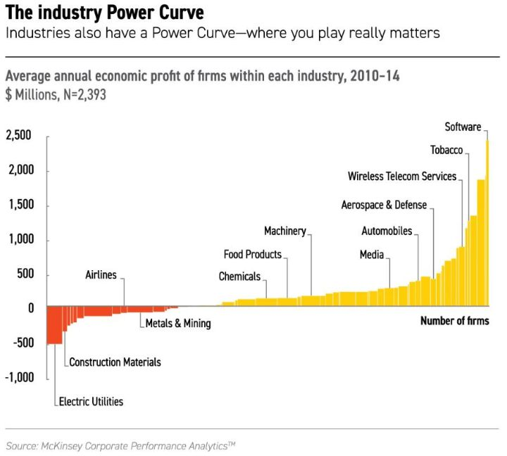

Viikon kuumat linkit
Linkkejä matkan varrelta... hyvää viikonloppua!
“If the job has been correctly done when a common stock is purchased, the time to sell it is – almost never.” - Phil Fisher
Tutkimuksen mukaan salkunhoitajat ovat suhteellisen hyviä tekemään ostopäätöksiä. Sen sijaan myyntipäätökset ovat ne, joista aliperformanssi selittyy. Paremmin olisi mennyt, jos olisi arponut mitä osaketta myy tai keventää. Kuten Phil Fisher vihjaa alun sitaatissa, jos sijoittaja on nähnyt tarpeeksi vaivaa löytääkseen hyvän yhtiön, joka pystyy liiketoiminnallaan tekemään keskivertoa parempaa pääoman tuottoa yli ajan, pitäisi sen antaa rauhassa mahdollistaa korkoa koron tehdä ihmeitään. Niin kauan siis, kun yhtiön tuottopotentiaali ei ole muuttunut. Seuraavassa kahden eri sijoittajan lähestymistavat aiheeseen: milloin myydä? (Tässä ja tässä)
Miksi arvo-faktori hävisi viime vuonna (jälleen) kasvulle? Aikaisempina 2010-luvun vuosina kasvu voitti arvon yksinkertaisesti arvoa paremmalla tuloskasvulla. Viime vuonna homma meni päälaelleen. Arvoyhtiöiden suhteellinen tuloskehitys oli parempaa kuin kasvuyhtiöiden (-1% vs -3.5%) sekä osinkojen ja osakkeiden takaisinostojen kautta lisäsivät omistajien arvoa, toisin kuin kasvuyhtiöt (+3.6% vs -3.6%). Silti kasvu pöllytti arvon pelkästään kertoimien kasvun avulla parempaan kehitykseen vuonna 2019 (+44% vs arvo +24%).
Teknologian alun loppu: 1900-luvun jälkipuoliskolla auto mullisti yhteiskunnan luoden lähiöt ja suuret kauppakeskukset. Vain muutamat autovalmistajaa jäivät dominoimaan. Sittemmin itse auto ei ole enää ollut se mielenkiinnon kohde vaan itse ne asiat, jotka auto ympärilleen mahdollisti. Samaan tapaan teknologia ja pikemminkin tietokoneet ja internet ovat kehittyneet. PC:stä ja kiinteästä lankaverkosta mobiiliin ja pilvipalveluihin. ”Kaikki” alkaa olla verkossa ja koko ajan. Itse teknologia ei kohta ole enää fokuksessa vaan se, miten niiden ympärille rakentuvat eri palvelut mullistavat yhteiskuntaa. Amazon, Microsoft, Apple ja Google ovat 2000-luvun GM, Ford ja Chrysler.
Siinä missä vanhempien sukupolvien suosikkimedia ovat televisio ja elokuvat, on nousevien sukupolvien valinta selvä: videopelit. Niiden kehitystä ovat rajoittaneet teknologia, joka vasta nyt alkaa olla siinä pisteessä, joka mahdollistaa pelien todellisen potentiaalin avaamisen. Kaiken keskiössä on pelien mahdollistama sosiaalinen aspekti. Ne luovat maailmoja, joihin voi uppoutua joko pelaajana tai katsojana. Kuluttaja voi monesti itse vaikuttaa tarinan kulkuun kenties mahdollistaen loputtoman määrän lopputulemia. Toisin kuin elokuvissa, joissa tarinankertoja on huomion kohteena, peleissä itse pelaaja on keskiössä. Pelimaailmoissa fanitukselle ei ole samanlaisia rajoja kuin televisiossa tai elokuvissa. Keskiverto Jenkki katsoo tv:tä 5h päivässä. Ei ole syytä olettaa etteikö samoihin lukuihin päästä jatkossa myös pelimaailmassa. Bisnespotentiaali on valtava ja se on vasta heräämässä henkiin!
Monien startuppien modus operandi viime vuosina on ollut seuraava: myydään euroja kahdeksallakymmenellä sentillä. Kasvua on haettu hinnalla millä hyvänsä. Sen on mahdollistanut VC-rahoittajat. Viime vuosi muutti suhtautumista. Uber, Lyft, WeWork jne joutuivat julkisen markkinoiden sijoittajien valokeilaan. Yhtäkkiä yhtiöt joutuvatkin miettimään kannattavuutta. Ennenkuulumatonta! Tällä oli seurauksensa: Q4’19 USA:n VC-rahoituskierrokset vähenivät 29%. Edelleen privaattiyhtiöt keräsivät rahaa reilusti yli USD25bn, mutta suunta on alas. Sijoittajien FOMO on muttunut ja tilalle on tullut FOLS (fear of looking stupid - en tiedä keksinkö termin itse vai olenko nähnyt jossain). Kehitys suosii hyviä yhtiöitä, huonot ja kusetukset jäävät vailla pääomia. Kehitys on myös hyväksi sijoittajille.
Viikon kuva:
Miksi maailman paras tennispelaaja tienaa useita kertoja enemmän kuin maailman paras sulkapallon pelaajaa? Miksi joistakin töistä maksetaan enemmän kuin toisista? Selitys löytyy eri toimialojen taloudellisella tulosvoimalla. Eri aloilla yhtiöillä on mahdollista tehdä enemmän tuottoa kuin toisilla - ja hyvin merkittävästi. Se, miten pääoman saa skaalattua ja vielä tuottamaan järkevästi, voivat olla huomattavan erilaiset eri toimialoilla. Tuottoisimpia aloja ovat, eivät yllättäen, software ja tupakkateollisuus. Keskimäärin tappiollisia ovat sähköntuottajat, rakennusyhtiöt, lentoyhtiöt ja kaivosala. Mutta erot voivat olla valtavia! Yhtiöistä parhaimman 10% tuotto on 30 kertaa parempi kuin kaikkien yhtiöiden keskiarvon! Se, millä alalla yhtiö toimii, selittää kyseisen yhtiön menestyksestä jopa 50%! Toki huonolla alalla voi olla menestyjiä - ja toisinpäin. Mutta se, millä pelikentällä päättää pelata on tärkein yksittäinen tekijä. Mieluummin olisi keskiverto yhtiö (tai pelaaja tai työntekijä) erinomaisella alalla, kuin erinomainen yhtiö keskivertoalalla. Voiko yhtiö nousta keskivertoyhtiöstä parhaimpaan kastiin? Käy ilmi, että vuosikymmenessä vain noin 8% yhtiöistä onnistuu siinä. Joko yhtiön pitää pyrkiä muuttamaan itse toimialaa, tai sitten pyrkiä vaihtamaan koko toimialaa. Sijoittajan helpottaa omaa työtään, jos keskittyy parhaimpiin toimialoihin. Ei vähintään kilpailun vuoksi vuosikymmenessä itse alatkin muuttuvat, joten pitkäaikaisen sijoittajan tulisi pystyä ymmärtämään miten omistamansa yhtiö pystyy luovimaan muutoksessa.
